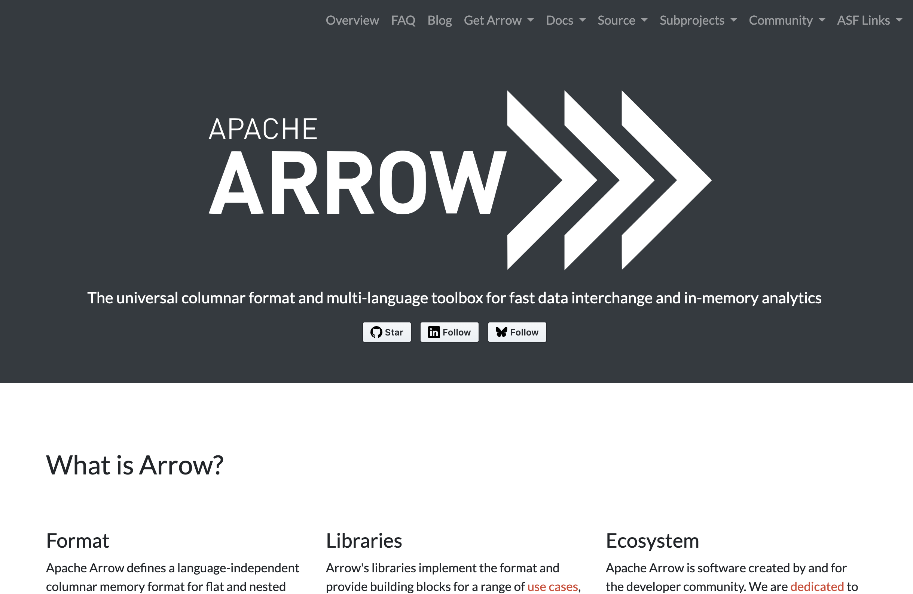

Scaling Up Data Workflows
with Arrow, Parquet, and DuckDB
useR! Conference 2025
August 10, 2025
😂
😭
🧠
🤯

Example
US Census Public Use Microdata Sample (PUMS)
53 million rows
311 columns
45 GB in CSVs on disk
~80 GB in memory in R (if it were possible)
Example
With arrow, it is possible
How does this work?
Parquet files for storing data on disk
Dataset: data chunked into meaningful partitions (files)
Arrow’s fast query engine, computing in parallel across chunks of data
There’s a book!
1. Parquet files
Open standard file format for storing data on disk
Arrow : Memory :: Parquet : Disk
Widely adopted across big data ecosystem, implemented in many languages
CSV vs. Parquet
Row vs. column orientation: Parquet is columnar (like R and Arrow)
Columnar allows selected reading of data: we usually don’t need all columns
Columnar allows better compression and encoding
Types: rich type system in Parquet, including nested and complex types
Types are preserved in schema, not inferred at read time
High fidelity, smaller file sizes, faster reads
Reading and writing Parquet files
Reading and writing Parquet files
nanoparquet vs. arrow Reader
- nanoparquet
- Lightweight Parquet reader
- Minimal dependencies
- Good for embedding
- arrow
- Full-featured reader
- Support for datasets
- Integration with Arrow ecosystem
2. Datasets and partitioning
2. Datasets and partitioning
pums_person$files[1:10] |> stringr::str_replace("^.*data/person/", "")
## [1] "year=2005/location=ak/part-0.parquet"
## [2] "year=2005/location=al/part-0.parquet"
## [3] "year=2005/location=ar/part-0.parquet"
## [4] "year=2005/location=az/part-0.parquet"
## [5] "year=2005/location=ca/part-0.parquet"
## [6] "year=2005/location=co/part-0.parquet"
## [7] "year=2005/location=ct/part-0.parquet"
## [8] "year=2005/location=dc/part-0.parquet"
## [9] "year=2005/location=de/part-0.parquet"
## [10] "year=2005/location=fl/part-0.parquet"“Hive-style partitioning”: both column names and values are encoded in the file path
2. Datasets and partitioning
Convention: directory (or bucket in cloud storage) of Parquet files with a common schema
We can split data into files called partitions based on the values of one or more columns
When we query it, can skip over files that don’t match our query
2. Datasets and partitioning
Example query from before:
pums_person |>
filter(year == 2021, grepl("Subway|Light rail", JWTRNS)) |>
summarize(n = sum(PWGTP)) |>
collect()We didn’t have to scan 884 files, we only had to scan the 52 files that contain data for the year 2021:
How to (re)partition with arrow
my_dataset <- open_csv_dataset(path = "./data/my-oversized-csv.csv")
my_dataset |>
mutate(year = year(datetime), month = month(datetime)) |>
write_dataset(
path = "./data/my-much-nicer-parquet-dataset",
partitioning = c("year", "month")
)Can point at a single large file that you can’t read into memory:
arrowcan process in chunksCan use a dataset that already has partitions and write to new partitions
Optimal partitioning
It depends!
What queries you will run
Number of unique values in partition columns
Too many partitions –> too many files, lose the benefits of column orientation and compression
3. Query engines
Query planning and lazy evaluation
pums_person |>
filter(year == 2021, grepl("Subway|Light rail", JWTRNS)) |>
summarize(n = sum(PWGTP)) |>
collect()Each step builds up a query, like
dbplyrNo computation happens until
collect()This allows optimizations: only need 52 files and 2 columns, not 884 files and 311 columns
arrow has great dplyr support
Currently: 222 R functions, 37
dplyrverbsAll the things you’d expect from
dbplyrDeep support for
stringrandlubridate
arrow has great dplyr support
pums_person |>
filter(AGEP > 18) |>
transmute(
higher_education = stringr::str_detect(SCHL, "(Bach|Mast|Prof|Doct|college|degree)")
)
## FileSystemDataset (query)
## higher_education: bool (match_substring_regex(SCHL, {pattern="(Bach|Mast|Prof|Doct|college|degree)", ignore_case=false}))
##
## * Filter: (AGEP > 18)
## See $.data for the source Arrow objectarrow has great dplyr support
Currently: 222 R functions, 37
dplyrverbsAll the things you’d expect from
dbplyrDeep support for
stringrandlubridateAdditional
arrowcompute functions (280) availableUser-defined functions (UDFs): write your own R function and run in the
arrowquery engine
Should I use arrow or duckdb?
Yes!
For many workflows, either one will serve just fine
Historically,
arrowhas had richer dplyr integrationIf you need advanced SQL features, use
duckdbMostly a matter of preference
arrow and duckdb
arrow and duckdb
Key takeaways
Use Parquet files
Split large datasets into partitions based on common query patterns
Run modern query engines (
arrow,duckdb) on your machine: just install from CRAN, no need for a big compute cluster or serviceThe
arrowpackage provides a lot of this all in one. But if you need something lighterweight or more specialized, you have options (nanoparquet,nanoarrow,duckdb, etc.)The Arrow format is the key to this modern data stack. It is what allows all of these tools to work together and share data efficiently
Resources
Working with cloud storage
Working with cloud storage
pums_bucket <- s3_bucket("scaling-arrow-pums")
pums_s3 <- open_dataset(pums_bucket$path("person"))
# Query execution with lazy evaluation
pums_s3 |>
filter(year == 2021, location == "ca", AGEP >= 16) |>
group_by(year, ST) |>
summarize(
mean_commute_time = sum(JWMNP * PWGTP, na.rm = TRUE) /
sum(PWGTP),
count = n()
) |>
collect()